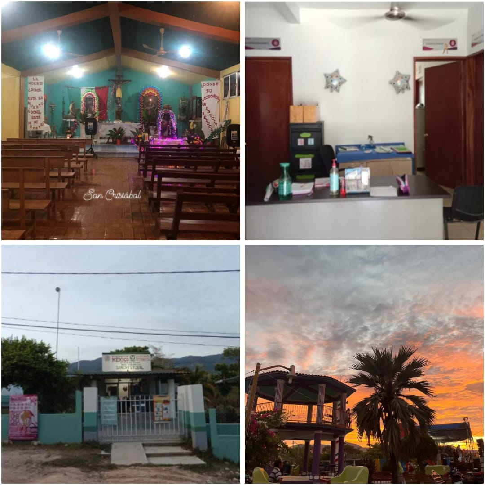
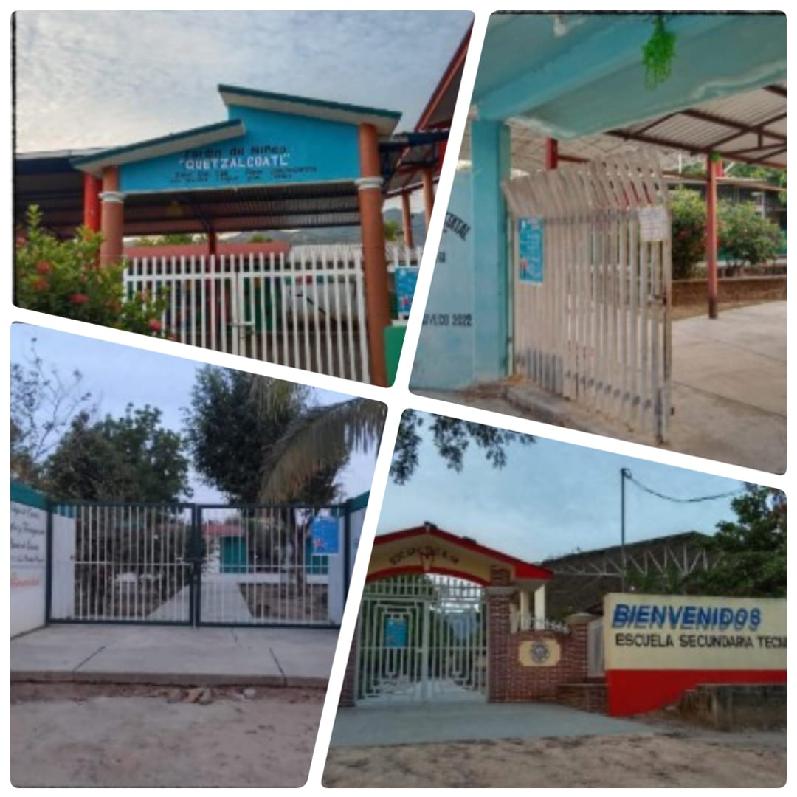
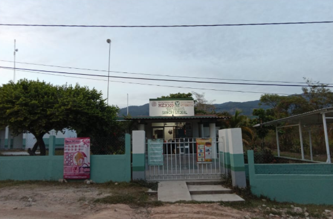
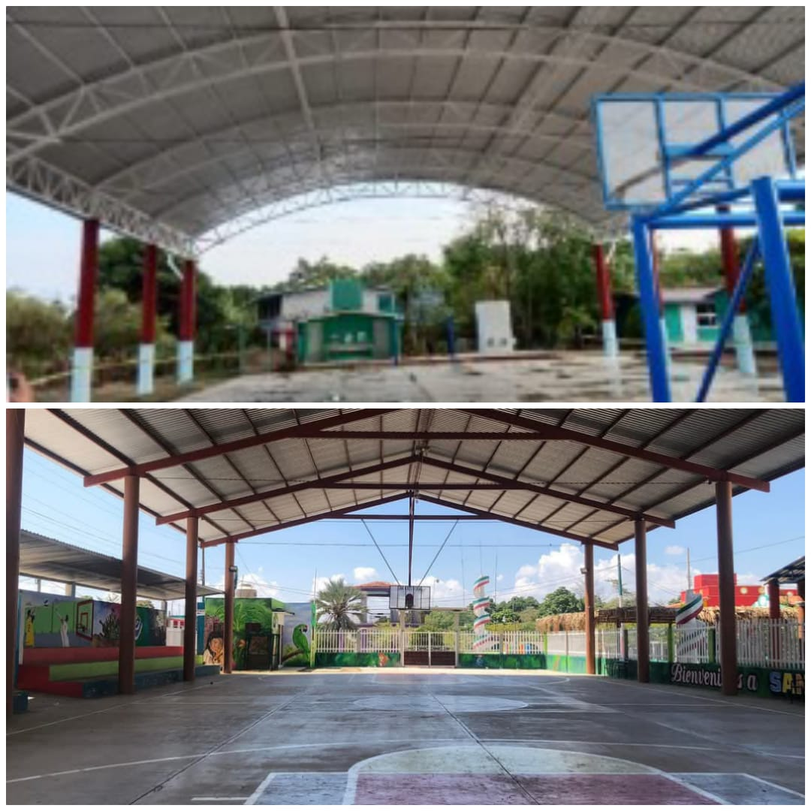
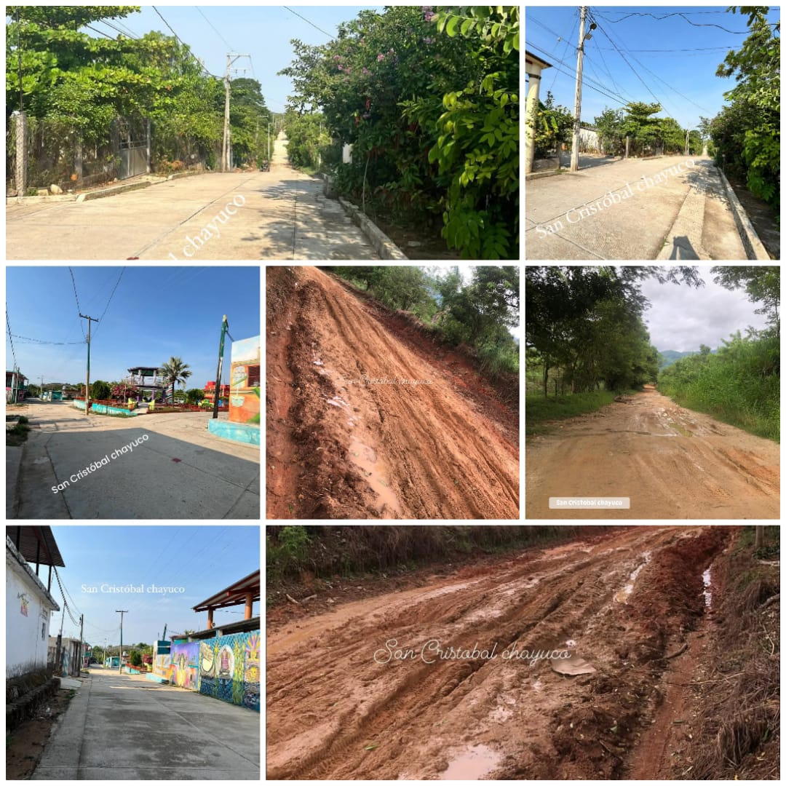

Cristóbal es una agencia municipal perteneciente al municipio de San Agustín Chayuco, ubicado en el distrito de Jamiltepec, en el estado de Oaxaca. La comunidad de san Cristóbal está integrada además de sus elementos individuales, de una iglesia católica, una agencia municipal, centro de salud, escuelas, un quiosco, cuenta con luz eléctrica, pequeñas tiendas de abarrotes, una tienda cona supo, internet y señal Telcel.

Jardín de Niños Quetzalcóatl: Con clave 20DJNO9120 fundado en enero de 1984 Escuelas Primaria Rural Estatal “Miguel Hidalgo “: Con clave 20DPR03981 se fundó el 20 de enero de 1950 y cuenta con seis aulas. Escuela Secundaria Técnica No.88: Con clave 20DSTOOOSR fundado el 9 de 1976. CECyTE EMSaD No:34 Colegio de Estudios Científicos y Tecnológicos del Estado de Oaxaca: Con clave 20EMS0034B fundado el 28 de noviembre de 2003.
Educación:
Jardín de Niños Quetzalcóatl: Con clave 20DJNO9120 fundado en enero de 1984 Escuelas Primaria Rural Estatal “Miguel Hidalgo “: Con clave 20DPR03981 se fundó el 20 de enero de 1950 y cuenta con seis aulas. Escuela Secundaria Técnica No.88: Con clave 20DSTOOOSR fundado el 9 de 1976. CECyTE EMSaD No:34 Colegio de Estudios Científicos y Tecnológicos del Estado de Oaxaca: Con clave 20EMS0034B fundado el 28 de noviembre de 2003.

El Centro de Salud brinda atención médica básica a la comunidad. Sus servicios incluyen: Consultas médicas generales, vacunación, atención a mujeres embarazadas y niños, distribución de medicamentos básicos.
Salud:
El Centro de Salud brinda atención médica básica a la comunidad. Sus servicios incluyen: Consultas médicas generales, vacunación, atención a mujeres embarazadas y niños, distribución de medicamentos básicos.

Nuestra comunidad cuenta con 4 canchas de basquetbol: 1 en la Escuela Primaria, 2 en Escuela Secundaria Técnica No.88 y 1 pública.
Deporte:
Nuestra comunidad cuenta con 4 canchas de basquetbol: 1 en la Escuela Primaria, 2 en Escuela Secundaria Técnica No.88 y 1 pública.

La comunidad de San Cristóbal cuenta con caminos rurales existen caminos de terracería que conectan la comunidad con localidades cercanas. En temporada de lluvias, algunos tramos pueden volverse difíciles de transitar, así también cuenta: Camionetas de pasaje.
Vías de Comunicación
La comunidad de San Cristóbal cuenta con caminos rurales existen caminos de terracería que conectan la comunidad con localidades cercanas. En temporada de lluvias, algunos tramos pueden volverse difíciles de transitar, así también cuenta: Camionetas de pasaje.